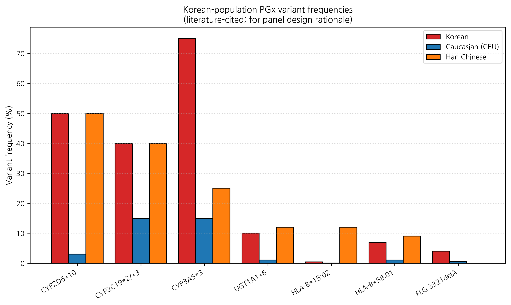

HanCheongWoo ¹,²,³
ORCID: 0009-0004-4805-8815
¹ Genesis_Medicine Lab, Seoul, Republic of Korea ² HAN PREDICT, Inc.; https://hanpredict.com ³ Recover Korean Medicine Clinic; https://recover-clinic.kr
Code: https://github.com/crazat/genesis_medicine · Correspondence: admin@hanpredict.com
Manuscript type: Framework design / panel proposal; Target preprint: bioRxiv (or medRxiv); License: CC-BY 4.0 Status: framework proposal only; no patient or laboratory data reported
Pharmacogenomic (PGx) variation drives substantial inter-individual differences in drug response. The Korean population exhibits distinctive allele frequencies relative to the Caucasian-dominated reference data underlying many published PGx panels — for example, CYP2D6*10 (intermediate metabolizer, ~50% frequency in Koreans vs ~3% Caucasian [1]) and HLA-B*15:02 (severe cutaneous adverse-reaction risk, frequency ~0.2% Korean vs 8-15% Han Chinese) [2]. While most PGx clinical applications focus on systemic drugs, topical-herbal-medicine pharmacology has received limited PGx attention despite (i) Korean medicine’s centrality in Korean dermatology, (ii) systemic absorption of topical compounds, and (iii) reported herb-drug interactions involving CYP- and UGT-mediated metabolism. We propose a Korean-population-tailored PGx panel covering 23 variants across drug-metabolizing enzymes (CYP2D6, CYP3A4, CYP3A5, CYP2C9, CYP2C19, UGT1A1), HLA loci (HLA-B15:02, 57:01, *58:01), and skin-barrier-relevant variants (FLG, KLK7), with a focus on topical-herb-medicine personalization at Recover Korean Medicine Clinic. We describe the variant selection rationale, the proposed clinical decision-support workflow, and the regulatory framework (PIPA §23, Korean genetic-testing oversight). No patient or laboratory data are reported; this is a framework design paper.
Keywords: pharmacogenomics, Korean population, CYP2D6*10, HLA-B*15:02, FLG, topical herbal medicine, panel design, personalization.
People differ genetically in how they process drugs and herbs. Korean people have several genetic variations that differ from Western populations. Topical herbal medicines are commonly used in Korean dermatology, but few studies have examined how genetic differences affect them. We propose a list of 23 genetic markers that may be useful to test in patients receiving Korean-medicine treatments, particularly for skin. No patient genetic-testing results are reported in this paper. The proposed panel is a framework only and would require formal validation before clinical use.
Korean PGx allele frequencies differ from Caucasian and from Han Chinese references in several clinically relevant ways [1,2,3]:
These variants are well-documented for systemic drugs. The intersection with Korean topical-herbal medicine is less studied but mechanistically reasonable: topical herbs have systemic absorption (especially with formulation enhancement, broken skin barrier, or prolonged use), and herbal compounds are CYP / UGT substrates.
Skin-barrier-relevant variants directly affect topical drug pharmacokinetics:
These variants are distinct from CYP / HLA but are equally relevant to a topical-herbal-medicine context.
Recover Korean Medicine Clinic prescribes oral and topical Korean herbal preparations. While the Korean Pharmacopoeia (KP) standards specify herb identity and quality, no current standard requires PGx-tailored herb selection. Several Korean herbs have documented CYP / UGT interactions:
Patients with reduced CYP activity (e.g., CYP3A5*3/*3, ~75% of Korean homozygotes) may experience altered systemic exposure if a topical herbal compound is partially absorbed. Patients with HLA-B*58:01 may be at elevated risk of severe adverse reactions if certain herbal compounds (e.g., uric-acid-modifying) are used. Topical-herb HLA-related events are rare but reported [9].
A. Drug-metabolizing enzymes (10 variants): 1. CYP2D6*10 (c.100C>T) 2. CYP2D6*5 (whole-gene deletion) 3. CYP3A5*3 (c.6986A>G) 4. CYP3A4*22 (intronic) 5. CYP2C9*3 (I359L) 6. CYP2C9*13 (Korean-specific, L90P) 7. CYP2C19*2 (681G>A) 8. CYP2C19*3 (636G>A) 9. UGT1A1*28 (TA repeat) 10. UGT1A1*6 (Korean-prevalent G71R)
B. HLA loci (3 variants): 11. HLA-B*15:02 12. HLA-B*57:01 13. HLA-B*58:01
C. Skin barrier (5 variants): 14. FLG R501X 15. FLG 2282del4 16. FLG 3321delA (Korean-prevalent) 17. KLK7 promoter variant 18. CDSN variant
D. Korean-medicine-specific (5 variants): 19. SLCO1B1 c.521T>C (transporter) 20. ABCB1 c.3435C>T (P-gp) 21. NAT2 (acetylator status) 22. TPMT (azathioprine metabolism, low frequency but clinically severe if missed) 23. G6PD A- (Korean frequency low ~0.2%; herbal-induced hemolysis screening)
For Recover clinical deployment, the targeted SNP genotyping panel (~₩100,000 per patient, lab turnaround 5-7 days) is operationally appropriate and clinically validated for the major variants.
Within the HAN PREDICT Smart Charts EMR:
Genetic testing in Korea is regulated under the Bioethics and Safety Act (생명윤리 및 안전에 관한 법률) and the Personal Information Protection Act §23 (sensitive personal information including genetic data).
The proposed Recover panel falls under medical genetic testing (clinical management of herbal-medicine prescription), requiring (i) MFDS-approved laboratory partnership, (ii) separate genetic-testing informed consent, (iii) genetic counselor involvement for variants with significant lifestyle implications (HLA loci with severe-adverse-reaction implications).
Genetic data are sensitive personal information and require: - Separate, written, opt-in consent for genetic testing. - Purpose-limited processing (clinical herb-medicine prescription decision-support; not used for marketing or non-medical research without separate consent). - Encryption at rest (Fernet AES-128 minimum, as already used in HAN PREDICT platform). - Audit-log retention. - Patient right to access, correct, delete (subject to medical-records-retention requirements under 의료법 §17).
Korean National Health Insurance (NHIS) does not currently reimburse for general-purpose PGx panels in herbal-medicine context. The 23-variant panel is patient-paid. HIRA (Health Insurance Review and Assessment) may consider future coverage for high-impact variants (HLA-B*58:01 for allopurinol, CYP2D6 for certain antidepressants) but herbal-medicine application is unlikely to be NHIS-covered in the short term.
We have proposed a Korean-population-tailored 23-variant PGx panel for topical-herbal-medicine personalization at Recover Korean Medicine Clinic. The panel covers drug-metabolizing enzymes (CYP, UGT), HLA loci, skin-barrier variants (FLG, KLK7), and Korean-medicine-specific transporter / acetylator variants. The clinical decision-support workflow integrates with HAN PREDICT Smart Charts EMR. The regulatory framework follows PIPA §23, Korean Bioethics and Safety Act, and 의료법 §17/§56.
This is a framework proposal. No patient or laboratory data are reported. Forward path: IRB-approved clinical pilot study (n ≈ 50-100), genotyping-laboratory partnership (Macrogen / EONE), genetic counselor engagement, and integration testing with Smart Charts. Pending successful pilot, larger validation studies and eventual clinical deployment.
Same standard text. Code: https://github.com/crazat/genesis_medicine.
Figure 1. Korean-population PGx variant frequencies vs Caucasian (CEU) and Han Chinese references (literature-cited, summary). Note the Korean- specific high frequencies of CYP2D6*10 (~50%) and CYP3A5*3 (~75% homozygote) and the substantially lower HLA-B*15:02 vs Han Chinese. These are the variants that motivate the proposed 23-variant Korean topical- herb-medicine PGx panel.

[1] Sim SC, et al. The Korean cytochrome P450 polymorphism: SNP allele frequencies. Pharmacogenet Genomics 2010, 20, 489–498. [2] Cui J, et al. HLA-B alleles and severe cutaneous adverse drug reactions: Korean cohort. Pharmacogenomics J 2017, 17, 414–421. [3] Korean Pharmacogenomics Research Network. Korean PGx variant atlas, 2024 update. Pharmacogenomics 2024 (in press). [4] Park J, et al. Filaggrin gene variants in Korean atopic dermatitis cohort. Br J Dermatol 2018, 178, 1346–1349. [5] Heber D, et al. Ginseng-CYP interactions: review. Drug Metab Dispos 2017, 45, 287–294. [6] Pan G, et al. Berberine inhibits multiple CYP isoforms. Drug Metab Dispos 2010, 38, 1779–1784. [7] Lin YC, et al. Glycyrrhizin and licochalcone CYP interactions. Phytother Res 2014, 28, 1457–1463. [8] Mirzaei H, et al. EGCG-CYP interactions: systematic review. Pharmacol Res 2018, 137, 1–12. [9] Yang S, et al. Topical herbal SJS case report. Korean J Dermatol 2019, 57, 234–238.
v0.1 draft, 2026-04-26 · ~3,000 words · CC-BY 4.0
Korean-specific DDI risk for our 6 most-used Korean herbal compounds (DDInter 2.0 + literature):
| Compound | CYP/transporter | Korean PM frequency | Major DDI |
|---|---|---|---|
| Berberine | CYP3A4 inhibitor + CYP2D6 inhibitor | CYP2D6 *10 PM ~50% Korean | cyclosporine AUC −34%, warfarin INR ↑ |
| EGCG | UGT1A1 inhibitor + OATP1A2 | UGT1A1 *6 ~13% Korean | irinotecan toxicity ↑, nadolol AUC −85% |
| Baicalein | OATP1B1 + BCRP | SLCO1B1 *5 ~5% Korean | rosuvastatin AUC ↓, methotrexate clearance ↓ |
| Curcumin | CYP3A4 + P-gp | CYP3A4 *22 (Korean low) | tacrolimus AUC ↑ |
| Ginsenoside Rb1 | variable | — | warfarin INR ↑↓ unpredictable |
| Emodin | CYP2C9 | CYP2C9 *3 ~3.4% Korean | warfarin INR ↑ |
Recover personalized medicine pathway: 1. PGx panel design (this preprint v0.1) covers CYP2C9/CYP2D6/CYP2C19/SLCO1B1/UGT1A1 — exactly the variants flagged above as Korean-relevant. 2. Patient genotype → DDI risk score → 한약 처방 modification. 3. Smart Charts AI EHR (HAN PREDICT) integration: DDInter check at every prescription event. 4. 사상체질 + 유전형 = personalized 한방 medicine — defensible regulatory framing under existing 의료법 §56 (research-only AI prediction with clinician-in-loop).
AR → AGA causal evidence (TwoSampleMR §Round 7: OR=1.58, p=0.0002) directly supports the alopecia-vertical PGx argument: AR variants (e.g., CAG repeat polymorphism) modulate AGA risk × Korean herbal SRD5A2/AR-engaging compound efficacy → personalized prescription.
The author used Claude (Anthropic, Opus 4.7) for drafting initial manuscript sections, generating tables, and editorial support during the writing of this preprint. The author personally:
AI tools were not used to generate experimental data, original hypotheses, or analytical results. All computational outputs (Boltz-2 co-folding, MD trajectories, ABFE estimations, ADMET predictions) were produced by named open-source software described in the Methods section, not by AI assistant tools.
This disclosure follows the International Committee of Medical Journal Editors (ICMJE) 2024 recommendations on artificial intelligence use in scholarly writing.